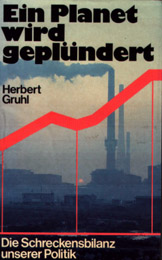
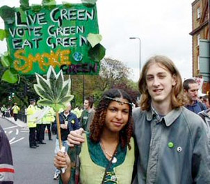

|
 | Nem újdonság: mindenki zöld
akar lenni. Kis, zöld emberke, aki majd jól megmenti a világot a gonosz
környezetszennyezőktől. Tetszetős ez a zöld szín, nem olyan, mint a korábban lejáratott
vörös vagy a kék. A zölddel ugyanúgy lehet lázadozni, van hozzá érthető ellenségkép, lehet
megint terelgetni a birkákat, akik korábban a vörös és a kék mesékre is fogékonyak voltak.
A tőkét addig ütöttük, míg mi törtünk bele; a nácikra addig mutogattunk, míg végül nem
maradt semmi, amire még ne mutattunk volna; és megint nevetségessé váltunk - még mindig
jobb, mintha megint gyilkossá - a korlátlan "szabadság" eszméjével. Nincs más hátra,
máshogy kell megmentenünk ezt a hülye emberiséget. Legyünk zöldek.
Mármost álljunk
meg egy pillanatra. Ellentétben a korábbi vörös, kék és más színekkel, olyan tényleg van,
hogy zöld, és nem most találták ki. A zöld fogalmát - már nem a színét, hanem a zöld
gondolatét - bizonyos Dr. Herbert Gruhl (1921-1993), az Ein
Planet wird geplündert (A bolygó kifosztása) című könyv szerzője találta ki 1975
körül, aki az elsők között ismerte fel, hogy a környezetszennyezés, a klímaváltozás és
minden ezzel járó dolog végső soron nem sok jóra vezet az emberiség számára. Abba kéne
hagyni mindent, de úgy cakkpakk mindent, amit eddig különféle ideológiák - kapitalizmus,
kommunizmus, mindenizmus - címén műveltünk, és újragondolni ezt a civilizáció-dolgot,
mielőtt fejünkre szakad az ég. Szó szerint. Inkább valahogy úgy kéne használni ezt a
bolygót, ahogy a Jóisten kigondolta. Gruhl persze nem talált fel ezzel semmi újat, csak
szólt, hogy elállítgattuk a kapcsolókat, és nem kéne tovább rángatni őket. De ebben nagyon is
igaza volt.
Sajnos azonban rosszkor volt igaza, mert a nyugati világ tömegesen
majommá formált ifjúsága épp ezekben az években őrült meg, és akart mindenáron forradalmat
csinálni, ha már a második világháborúból kimaradt. Mivel más nem jutott, hát nekiment a
világ természetes rendjének, lásd 1968-as diáklázadások, és csillogó szemmel követte azokat
a vénülő felforgatókat, akik végre megérték, hogy befejezhetik, amiért egy nem sokkal
korábban letűnt korban minimum pofont, de sok esetben elmegyógyintézeti illetve börtönbeli
gyógyüdülést kaptak, vagyis a keresztény Európa és a nemzet fogalmának lerombolását.
Fogták elhülyített tizenéveseiket, kivonultak velük az utcára, és lázadni kezdtek, mindegy
miért. A szülők ellen, az iskola ellen, a törvények ellen, az állam puszta léte ellen.
Ezen öregeknek köszönhetően jött létre a csúnya szóval balliberálisnak nevezett politikai
kultúra, amely a következő ideákat tűzte maga elé: a civilizáció minden addigi
tapasztalatának elvetése, a devianciák dicsőítése, a lelki élet megszüntetése, a tisztelet
fogalmának eltörlése és mindenféle társadalmi rend szétzilálása. E körök természetes
eredményei lettek a tömeggyilkos baloldali terroristák, mint például a Baader-Meinhof
csoport, de pszt, erről nem szabad balliberálisok előtt beszélni, mert vértolulást kapnak,
és elakad bennük a lemez a nácizós résznél. Minél több diplomájuk van, annál
biztosabban.
Egyszóval ilyen kor volt ez 1975 körül. Ekkor kezdődött az a szokás, hogy
ha egy férfi nem nőként viselkedett, kinézték a klubból, ha nem füvezett, kiröhögték, és
ha még katona is volt, már abszolút megvetés övezte. llyen kor van most is, csak azok az
idióta tizenévesek immár felnőttek, és idióta médiaemberek lettek. Ebbe a korba, mármint a
hetvenes évekbe robbant bele Herbert Gruhl, és tette meg szerény javaslatait a bolygó
megmentésére, mintegy a lassú megdöglés alternatívájaként. Arra azonban már nem maradt
ideje, hogy ki is fejtse nézeteit, mert a derék lázadozók, akiknek épp kezdett kifogyni a
lendületük, nem lévén több hagyományos érték, amit szétdúljanak, kitörő örömmel ölelték
keblükre. Ó, de rendes ember, talált nekünk új ellenségképet! Máris tervezgetni kezdték,
hogyan fognak bemászni a legközelebbi atomerőmű kerítésén, hogyan fekszenek majd keresztbe a
vegyi üzem iparvágányán, és hogyan tüntetnek majd a libamáj-üzemek ellen. Elvégre
tökmindegy, csak lázadjunk, jöjjön a csúnya rendőrség, és mutogathassunk rájuk, hogy
bántottak, és ordítva toporzékolhassunk, ha valami hülye öregnek ez nem tetszik, hát nem
érti, hogy for-ra-da-lom van?!
Gruhl nevét hiába is keresitek például a
Wikipediában, annyi van csak róla, hogy No page with
that title exists. Még ennyire se méltatja az utókor. Helyette keressetek rá a
balliberális Joschka Fischerre, a kommunista utcai randalírozóból és szabadcsapatosból lett
német miniszterre. Na, róla már találni fogtok vastagon, mindenhol kiemelve, hogy a német
Zöldek párt egyik alapítója. Ugyanígy megtaláljátok Petra Kellyt, a multikulturalista
vérliberálist, aki szintén a német Die Grünen alapítója, vagy Otto Schily-t, a - micsoda
meglepetés - kommunista ügyvédet, aki a Vörös Hadsereg Frakció nevű baloldali
terrorszervezet védőügyvédjeként szerzett hírnevet, majd a Zöldek hatalomba kerülése után
valahogy belügyminiszter lett, a Gyurcsány aranyhaverjaként és német megfelelőjeként
ismert Gerhard Schröder javaslatára. Egyszóval minden balos zöld nevét és életútját szabad
ismerni, csak Gruhl úrét nem, bár az itt felsorolt baloldali-cionista felforgatók csupáncsak
beleültek a készbe, amit ő egyáltalán nem nekik szánt.
Herbert Gruhl ugyanis
keresztény volt és konzervatív. Na, hát ezért nem hallhattok róla. Nemzeti érzelmű volt - már
amennyire a hetvenes évek Nyugat-Németországában szabad volt annak lenni - és egyáltalán
nem volt a vörös tombolás híve. Zöldre festődött "elvbarátait" éppen azért fogadta el, és
alapította meg velük a Zöldek pártját, mert azok, úgymond, elfogadták elveit, a
környezetvédelem és az ésszerűség filozófiáját, s felhagytak baloldali tevékenységükkel.
Kutyából persze nem lesz szalonna: ők vitték félre a zöld gondolatot, és hitették el a
világgal, hogy az tulajdonképpen baloldali ideológia, sőt, a "felvilágosult"
baloldaliságnak csupán egy mellékága, s mint ilyen, természetesen csakis az 1968-as
lázadók hitbizománya. Szegény Gruhl ugyan mondhatta, hogy ezt ő egyáltalán nem így találta
ki, de ez már senkit sem érdekelt, és 1981-ben, csupán egy évvel a Zöldek megalakulása után a
zöldnek álcázott kommunisták bekerültek a nyugatnémet kormányba.
És milyen jó dolog
zöldnek lenni! Ez az ideális szimbiózis a gazdatest, azaz a társadalom és a parazita, azaz
a baloldali "társadalmi megvilágosultak" között. Lehet nyugodtan kísérletezni, rombolni,
bevándorlókat Európára zúdítani, az állampolgárokat minden addiginál szorosabban
ellenőrizni, megfigyelni. Ha közben épül néhány szélkerék, és ki lehet menni tüntetni az
olajcégek vagy a fókapusztítás ellen, kit érdekel a kormány? A lázadozó fiataloknak adunk
elfoglaltságot, sőt, még furkósbotnak is jók, ha gazdasági érdekeink úgy kívánják: lásd
magyar libamáj... Ha meg épp nem borult fel tankhajó a közelben, még mindig ott vannak a
nácik, azokra mindig rá lehet küldeni pár ezer tüntetőt, hogy azokkal
foglalkozzanak.
A gengszterváltás után több, mint húsz év kellett, hogy Magyarországon
kiégjenek a hagyományos politikai szerepek. A baloldalról tudjuk, micsoda. A jobboldalról
szintén. A politológiában kicsit is járatosak tudják, hogy nálunk nincs is meg ez a két
pólus. A baloldal (gyk. MSZP) valójában szélsőbaloldal, a jobboldal (gyk. Fidesz) pedig
klasszikus baloldal, innentől kezdve pedig a valódi jobboldal (gyk. Jobbik) csakis
szélsőjobboldal lehet, holott nem az. A politikai színpad szélén táncikálnak a liberálisok,
akiknek mindegy, csak az legyen, amit ők mondanak. (Hogy kik ők? A megfejtők között egy
letépett körmöt sorsolunk ki.) A zöldek pedig...
Nos, ez az. Nálunk eddig nem voltak
zöldek. Nem volt rájuk szükség. A környezetvédelem senkit sem érdekelt, és igazából azt sem
tudjuk, mi az, hogy zöld. Valamit sejtünk, hogy balos idióták, akik odaláncolják magukat
különféle ipari létesítményekhez. Pedig Herbert Gruhl megírta, mi lenne a helyes válasz.
Zöldnek lenni annyit tesz: a világot a maga ésszerű és magától értetődő törvényei szerint
használni és megélni. Mi mást írhatna egy keresztény konzervatív? Ám jöttek az álzöldek, és
boldogan felismerték Gruhl tanaiban saját önigazolásukat. Hát persze, ésszerűen, vagyis
úgy, ahogy mi akarjuk, hát akkor reformáljuk meg a világot gyorsan, hogy ésszerű
legyen!
És
2008-ra, mire nálunk, Magyarországon is elkoptak a hagyományos politikai szerepek - értsd:
mindenkiről kiderült, hogy akkor is hazudik, ha kérdez - szükségszerűen előkerült a zöld
kártya. Fodor Gábor már régen bejelentette: szeretné, ha lenne Magyarországon is zöld párt. Ó,
természetesen dehogyis egy Herbert Gruhl-féle zöld pártra gondolt! Inkább egy olyanra,
amelyikbe át lehet menteni az SZDSZ holdudvarában képzett ifjú kádereket, esetleg néhány
MSZP-s havert, akik még nem mentek el a süllyesztőbe Zuschlag bukása után. Az új zöld párt,
mint afféle Noé bárkája, kimenekíti majd ezt a társaságot, s velük együtt ideológiáikat a
politikai elitet szökőárként elborító hitelvesztésből, át egy új "békés rendszerváltáson" a
túloldalra. Csak nem képzeljük, hogy feladják szép álmaikat a "szabadságról", ahol ők
mondják meg, ki lehet ember, a "békéről", ahol ők mondják meg, ki lövethet kire vagy az
"egyenlőségről", amelyben mindenki állat, de néhányan még nagyobb állatok, vagy hogy is volt
Orwellnél. 2010-re készen kell állnia az "új, friss" politikai erőnek. Már neve is van:
"Lehet Más a Politika." Azaz LMP.
Nem tűnt fel senkinek, milyen óriási érdeklődés
övezi ezt a suta kis pártocskát? Minden mozdulatukra azonnal odafordulnak a tévékamerák,
rohannak a riporterek, csattognak a fényképezőgépek. 2006 szeptember 18-án este több, mint
százezer ember tüntetett a Kossuth téren - de ezt letagadták, a közszolgálati Magyar
Televízió pedig még csak nem is tudósított róla, még akkor sem, amikor a tüntetők már a
kapujukat döngették. Erre jön ez az LMP, kiragaszt pár matricát, és máris övék a figyelem.
Kiállnak hárman a Parlament elé, jelképesen megmosni egy politikus kezét, és övék az
országos média figyelme. Komolyan elhisszük, hogy ez csupán az újszerűségük miatt van? Korábbi
kommunista pártkáderek, MSZP-hez és SZDSZ-hez közeli arcok hirtelen "zöldként" mutatkoznak
be, "zöld vitaesteket" szerveznek bioétel-kóstolóval, és a "zöld gondolat" fontosságáról
papolnak... s közben előadják a legvisszataszítóbb vadliberális ideológiákat, hogy
romboljuk le a családokat, akadályozzuk meg, hogy közösségek épüljenek, felejtsük el a
nemzet fogalmát, mert itt az új internacionalizmus, a zöld, a zöld, a sötétzöld. Komoly
emberek is bedőlnek ennek a maszlagnak, hiszen az LMP gőzerővel szervezi vidéki szervezeteit, és nem
egy jószándékú, de naiv embert felültetnek, maguk közé édesgetnek, hogy aztán mint "mérvadó
szakemberekre" hivatkozhassanak rájuk.
Herbert Gruhl nem ezt akarta. Az ő
olvasatában a környezet védelme nem ürügy, hanem eredmény. Nem olyan cél, amely feljogosít a
társadalom bármiféle újragondolására, ahogyan teszik azt - sok százmillió ember élete árán -
1789 óta a különféle, korszaktól függően forradalmárnak, baloldalinak, liberálisnak vagy
egyszerűen csak haladónak nevezett körök, hanem racionális, ésszerű életmód eredménye, olyan
életé, amely összhangban van a világ természetes rendjével, amit vagy úgy hívunk, hogy Isten
alkotta rend, vagy nem hívjuk úgy, de attól még ugyanaz. Nem újabb álcázólepel azoknak,
akik évszázadok óta visszaélnek az emberiség legnemesebb szavaival, a szabadsággal, az
egyenlőséggel és a testvériséggel, s ennek nevében törlik el mindhármat. A zöld gondolat
mindenkié, s értelmetlenné teszi mindazokat a társadalmi kísérleteket, amelyek a XX.
században csúfosan megbuktak. Ezt a zöld gondolatot tartja magáénak a Zöld Párt, az a párt,
amelynek képviselőjelöltje vagyok. Túl azon, hogy céljaink értelemszerűen a nemzet
túlélését, s azon túl a globális túlélést szolgálják, immár új, váratlan feladatunk is akadt:
megküzdeni a múlt sárkányával, ami nem is olyan régről maradt itt, és sokkal veszélyesebb,
mint eddig bármelyik. Hiszen immár nem "csupán" néhány százmillió, de mind a hatmilliárd
emberi lény életét veszélyezteti azzal, hogy pusztító, romboló ideológiája szolgálatába
akarja állítani az ökológiai önvédelem kérdéskörét, frázisokká alacsonyítani az ökologikus
gondolkodás közérdekét. Ha övék lesz a "zöld" fogalma, elvesztettük az utolsó esélyt a Föld,
s ezen belül Magyarország megtartására.
| | vissza a főoldalra |  |
| 1 2 3 4 5 6 7 8 9 | |  | | | | | | | | | | | | | | | | | | | | 1 2 3 4 5 6 7 8 9 |  |
|


túraszervező
túra-rss
mi ez?

legjobbak
legolvasottabbak
tartalomjegyzék
rss feed

AboryM
Caesar
Count Grishnackh
cscsabi
eürdüngh
Feki
GyalogKakukk
Ishukone
Kadzseszka
LACI1993
Mini
Muska
Rommel
Segi
Takezó
tommylee
vikcee
|